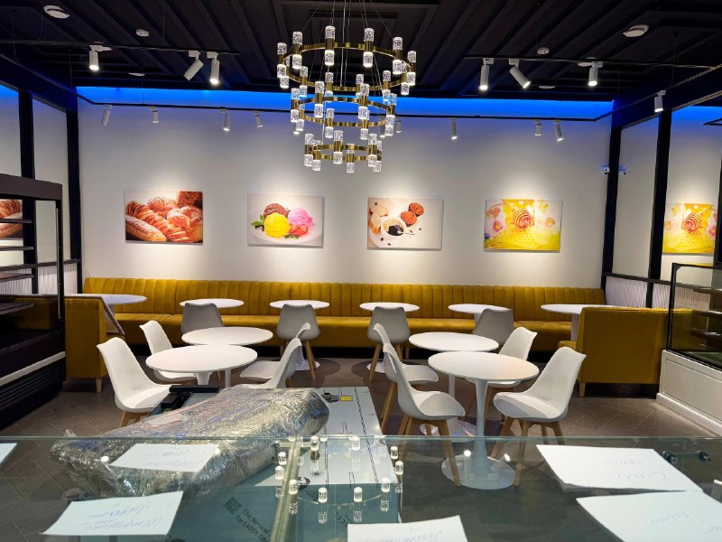
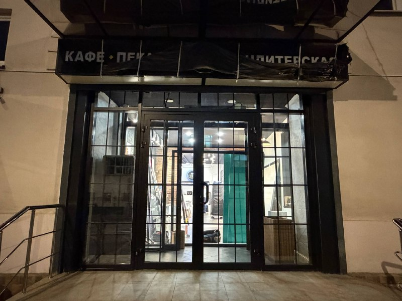
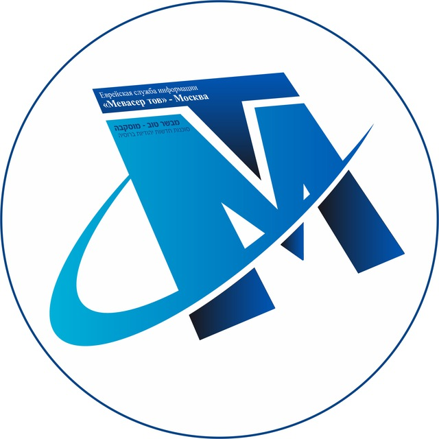
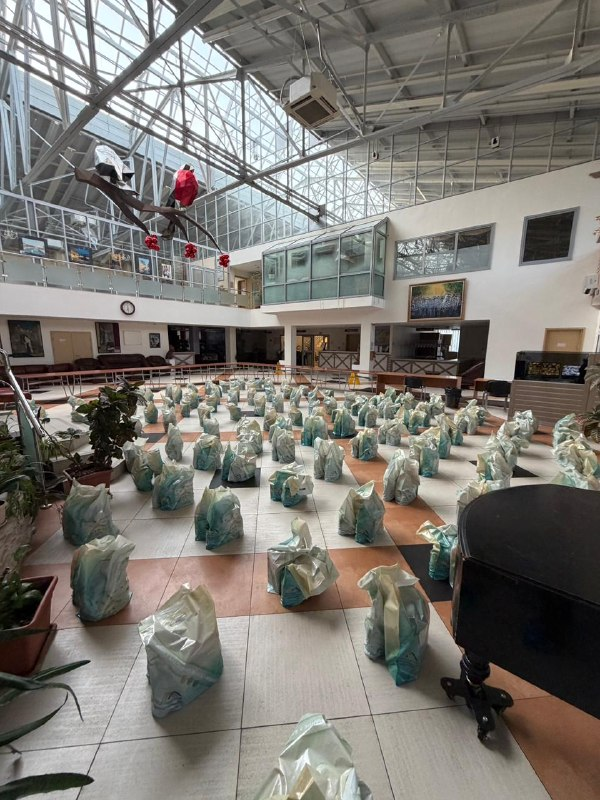
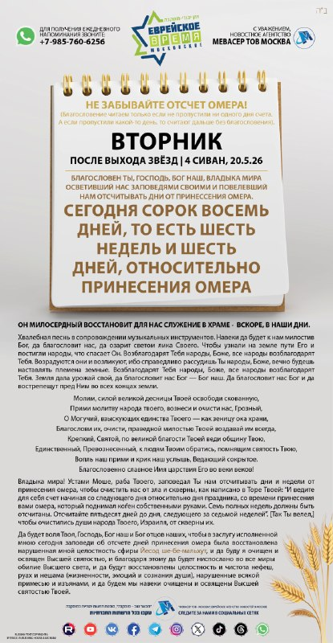

Новость дня
Скоро открытие: «Эден ле-меадрин»
Новое кафе-пекарня в районе Марьина Роща готовится к открытию. Публикация канала сопровождается фотогалереей с места.

Mevaser tov Moscow מבשר טוב מוסקבה

Новое кафе-пекарня в районе Марьина Роща готовится к открытию. Публикация канала сопровождается фотогалереей с места.
Фарбренген, посвященный подготовке к дарованию Торы, прошел с участием Р. Шнеура-Залмана Каплана, главы ешивы «Огель Менахем-Мендл» в Цфате.

В еврейском благотворительном центре «Шаарей Цедек» идет подготовка к раздаче праздничной помощи для многодетных семей и множества нуждающихся.

Ежедневное напоминание канала: сегодня сорок восемь дней, то есть шесть недель и шесть дней, относительно принесения Омера.
«Эден ле-меадрин» готовится к открытию в Марьиной Роще. На сайте размещена фотогалерея из публикации канала.
Календарь на ближайшие дни: зажигание свечей перед Шавуотом, второе зажигание, исход праздника и праздничные чтения.